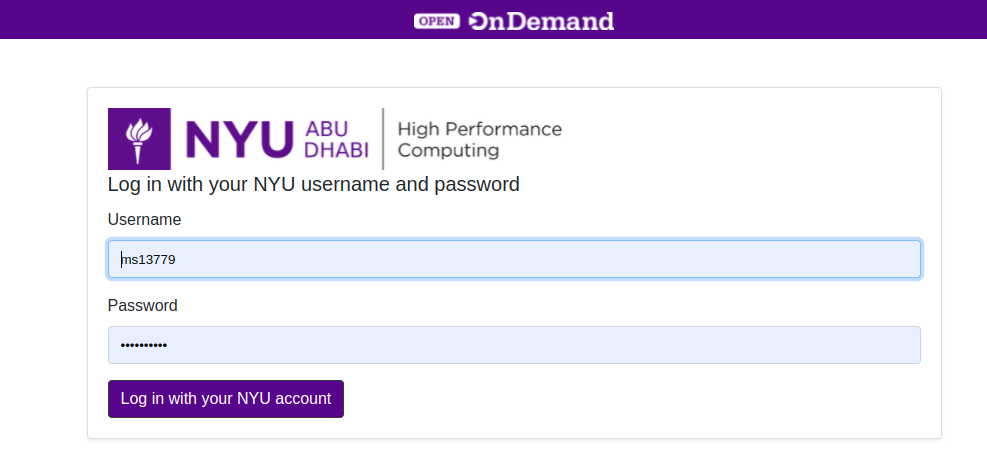

HPC Web Interface¶
Overview¶
The Web interface also known as OOD (built upon Open OnDemand ) is an interactive interface to remote computing resources which helps computational researchers and students efficiently utilize remote computing resources. The OOD Web Interface is one stop solution for all your HPC needs from accessing your files to submitting and viewing your jobs to running an interactive app.
Note
The documentation for this section is still under progress
Connection to OOD¶
To Access Jubail interactive interface go to this link https://ood.hpc.abudhabi.nyu.edu , enter your NetID and password and click Log in with your NYU account.

Note
This link requires you to be connected to the NYUAD VPN
OOD Features¶
These are the different features supported by OOD
Files shows and process your files in the different storage systems
$HOME(/home/<NetID>),$SCRATCH(/scratch/<NetID>) and$ARCHIVE(/ARCHIVE/<NetID>)
Conda Environment with Jupyter Notebook on OOD¶
To Add conda environment to Jupyter Notebook please follow this video: